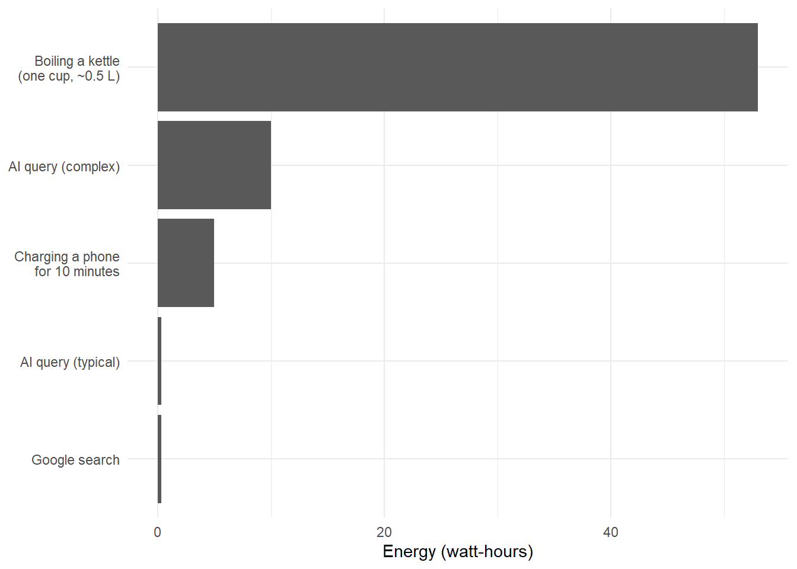
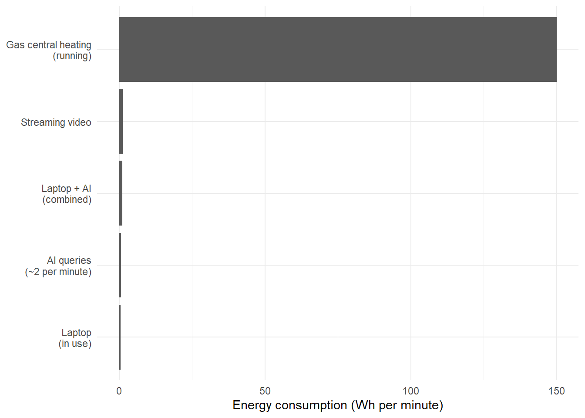

A policy briefing on the environmental cost of artificial intelligence
Summary
Artificial intelligence is often accused of being an environmental disaster, and headlines warn that a single ChatGPT query uses “ten times more energy than a Google search.” This briefing asks how large that cost really is: it compares the energy and water used by one query with other everyday actions on a like-for-like basis, and sets the sector’s total demand against global electricity supply. We find that a typical query uses about 0.3 Wh — comparable to a Google search, and roughly 170 times less than boiling a cup of water — and that generative AI as a whole accounts for around 0.05% of world electricity use today. The credible concern is not the individual query but the rate of growth: demand could rise more than twenty-fold by 2030, though that projection rests on efficiency gains that are hard to forecast. We therefore recommend that policy act on the supply side — low-carbon electricity for data centres, model efficiency standards, mandatory energy and water reporting, and siting rules where water is scarce — rather than on discouraging individual use, which would save very little.
The briefing also asks a question the headlines do not: under what conditions does using AI save more energy than it costs? That break-even is set out below.
What does a single AI query cost?
Estimates of the energy consumed by one AI text query have converged around 0.3 Wh for a standard interaction with a model like GPT-4o. This figure is supported by independent analysis from the research institute Epoch AI (Epoch AI, 2025) and is consistent with a figure of 0.34 Wh disclosed by OpenAI CEO Sam Altman in a 2025 blog post (Altman, 2025).
Not all queries are equal. Academic estimates for more complex “reasoning” models range from 3 Wh to 20 Wh per query, depending on model size and output length (IEEE Spectrum, 2025; Jegham et al., 2025). A reasonable range for typical use is 0.3–3 Wh per query.
For reference, a single Google search uses approximately 0.3 Wh (Google, via Epoch AI, 2025).
These figures are marginal costs — the energy consumed by each additional query once a model already exists. They do not include the fixed cost of training the model in the first place. Training GPT-4 required an estimated 50 GWh (de Vries, 2023) — equivalent to roughly 170 million typical queries. But training energy is sunk: it is spent once regardless of whether the model serves one query or one billion. For individual decision-making, the marginal cost per query is what matters. For policy, the two costs require different levers: efficiency standards and renewable procurement for training; demand-side signals for inference.
Comparing like with like
To put 0.3 Wh in context, we should compare it to other brief, discrete actions — things that, like an AI query, take seconds or minutes rather than hours.
library("ggplot2")discrete <-data.frame(action =c("Google search","AI query (typical)","AI query (complex)","Charging a phone\nfor 10 minutes","Boiling a kettle\n(one cup, ~0.5 L)" ),wh =c(0.3, 0.3, 10, 5, 53),source =c("Google via Epoch AI 2025","Epoch AI 2025; Altman 2025","IEEE Spectrum 2025","~30 Wh charger × 10 min","4.2 kJ/kg·°C × 0.5 kg × 80°C ÷ 3.6" ))discrete$action <-factor(discrete$action, levels = discrete$action[order(discrete$wh)])ggplot(discrete, aes(x = wh, y = action)) +geom_col() +labs(x ="Energy (watt-hours)", y =NULL) +theme_minimal()

Figure 1: Energy cost of brief everyday actions, compared to an AI query. Sources: Epoch AI (2025); DECC conversion factors; manufacturer data.
A typical AI query uses roughly the same energy as a Google search, and about 170 times less than boiling half a litre of water for a cup of tea.
How does AI compare to what it replaces?
The comparison above tells us what an AI query costs in isolation, but the more useful question is: what would you be doing instead? If AI replaces time spent working at a computer, we should compare energy rates — how much energy is consumed per minute of each activity.
rates <-data.frame(activity =c("AI queries\n(~2 per minute)","Laptop\n(in use)","Laptop + AI\n(combined)","Streaming video","Gas central heating\n(running)" ),wh_per_min =c(0.6,0.45,1.05,1.3,150 ),source =c("0.3 Wh × 2 queries/min","~27 Wh/hr; Arcadia 2022","Sum of laptop + AI","~77 Wh/hr; IEA / various","~9 kW boiler at ~100% duty" ))rates$activity <-factor(rates$activity, levels = rates$activity[order(rates$wh_per_min)])ggplot(rates, aes(x = wh_per_min, y = activity)) +geom_col() +labs(x ="Energy consumption (Wh per minute)", y =NULL) +theme_minimal()

Figure 2: Energy consumption rates for sustained activities. An AI session adds a small increment to the laptop baseline. Sources: Arcadia (2022); various; DECC (2012).
A person actively using AI at a rate of two queries per minute adds about 0.6 Wh/min to their energy consumption — roughly doubling their laptop’s draw. But both figures are dwarfed by background household energy use: running gas central heating consumes energy at roughly 150 Wh per minute (DECC, 2012), more than 250 times the rate of active AI use.
The break-even: when does AI save energy?
If an AI query (0.3 Wh) saves even one minute of laptop time (0.45 Wh), the energy arithmetic is already favourable: the net saving is 0.15 Wh per query. In practice, a useful AI interaction might save 5–10 minutes of research, writing, or debugging — yielding a net saving of 2–4 Wh.
This does not mean all AI use is beneficial. Queries that produce no useful output — casual chatting, generating content that goes unread, or replacing tasks that didn’t need a computer at all — carry cost without benefit. The break-even depends entirely on whether the AI query genuinely displaces energy-consuming activity.
What about water?
Data centres also consume freshwater, primarily for evaporative cooling. Researchers at the University of California, Riverside estimate that a session of approximately 20 AI queries consumes roughly 500 ml of water (UC Riverside, cited in EESI, 2025). This is a lifecycle estimate that includes “indirect” water use — water consumed in generating the electricity the data centre draws from the grid — not just water evaporated on site (de Vries-Gao, 2025). The split between direct and indirect water use varies enormously by location: a data centre powered by hydroelectric or thermal generation in a humid climate has a very different water footprint from one running on the same grid as coal-fired plants in an arid region.
How big is this number? At face value, 500 ml per 20 queries sounds alarming. But a single cup of coffee requires approximately 140 litres of water to grow, process, and transport the beans (Water Footprint Network, 2025) — roughly 5,600 times more water than one AI query. A single flush of a UK toilet uses about 6 litres (Waterwise, 2012). The water cost of AI is real, but it is small compared to agriculture, household use, and many industrial processes.
The aggregate picture is more nuanced. Morgan Stanley projects that global AI data centre water consumption could reach 1,068 billion litres per year by 2028 (Morgan Stanley, via MindfulSlowLife, 2026). For context, UK public water supply alone is approximately 5,300 billion litres per year (Ofwat, 2023). The concern is not that AI will drain the world’s water supply, but that large data centres can create localised pressure on water systems — particularly where they are sited in water-stressed regions. Policy responses should focus on siting decisions and cooling technology standards rather than on per-query consumption.
The bigger picture: aggregate demand
At individual scale, AI’s energy cost is small. At global scale, it adds up.
ChatGPT serves approximately 2.5 billion queries per day (OpenAI, via IEEE Spectrum, 2025). At 0.3 Wh per query, that is roughly 750 MWh/day, or 274 GWh/year. The entire generative AI sector consumed an estimated 15 TWh in 2025 (Schneider Electric, via IEEE Spectrum, 2025).
For context, global electricity consumption is approximately 30,000 TWh/year (IEA, 2024), so current AI use represents about 0.05% of the total. However, projections suggest AI data centre demand could reach 347 TWh by 2030 — a 23-fold increase (Schneider Electric, 2025). Whether this materialises depends on efficiency gains in both hardware and model design.
Conclusions
A single AI query has a negligible energy footprint — comparable to a Google search and far smaller than routine household actions like boiling a kettle (Epoch AI, 2025).
On a per-minute basis, AI adds modestly to the energy cost of computer use, and both are dwarfed by household heating.
AI can be net energy-positive when it saves more human–computer time than it consumes, but this depends on whether the query is genuinely useful.
The real concern is aggregate growth: rapid increases in query volumes and model complexity could make AI a significant fraction of global electricity demand by 2030 (Schneider Electric, 2025).
Policy should focus on the supply side — low-carbon electricity for data centres, model efficiency standards, and transparent energy reporting — rather than discouraging individual use.
Sources
Altman, S. (2025). “Three observations.” Blog post, OpenAI. CEO of OpenAI. First public disclosure of per-query energy figures.
Epoch AI (2025). “How much energy does ChatGPT use?” Gradient Updates. Independent estimate of ~0.3 Wh per GPT-4o query.
IEEE Spectrum (2025). “AI Energy Use: The Hidden Cost of ChatGPT Queries.” Synthesis of Schneider Electric projections and OpenAI data.
Jegham, N. et al. (2025). Academic estimates of per-query energy for GPT-4.1 nano, o3, and GPT-4.5. (Cited in Towards Data Science, 2025.)
Arcadia (2022). “The hidden energy costs of working from home.” Laptop energy consumption: ~53 kWh/year.
de Vries, A. (2023). “The growing energy footprint of artificial intelligence.” Joule, 7(10), 2191–2194. Training cost estimate for GPT-4.
de Vries-Gao, A. (2025). “The carbon and water footprints of data centers and what this could mean for artificial intelligence.” Cell Reports Sustainability. Lifecycle vs direct water use distinction.
DECC (2012). “How much energy could be saved by making small changes to everyday household behaviours?” Thermostat and heating energy data.
Energy Saving Trust (2021). Thermostat reduction: ~300 kg CO₂/year for a three-bedroom semi-detached home.
IEA (2024). World Energy Outlook. Global electricity consumption data.
EESI (2025). “Data Centers and Water Consumption.” Environmental and Energy Study Institute. UC Riverside estimates and WUE data.
MindfulSlowLife (2026). “How Much Water Does ChatGPT Use Per Day?” Citing Morgan Stanley water consumption projections.
Ofwat (2023). Water company performance data. UK public water supply: ~14,500 Ml/day (~5,300 billion litres/year).
Schneider Electric (2025). AI energy consumption projections: 15 TWh
to 347 TWh (2030).
Water Footprint Network (2025). Product water footprints. Coffee: ~140 litres per cup.
Waterwise (2012). Toilet flush volumes in UK homes: ~6 litres per flush.